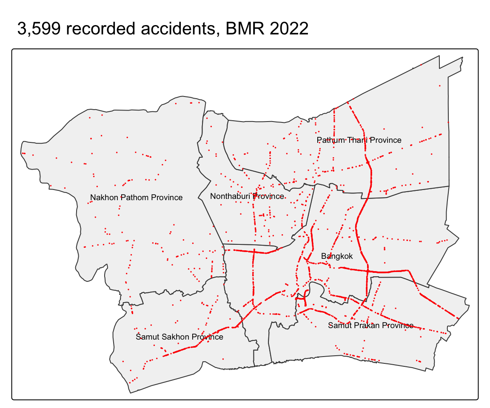
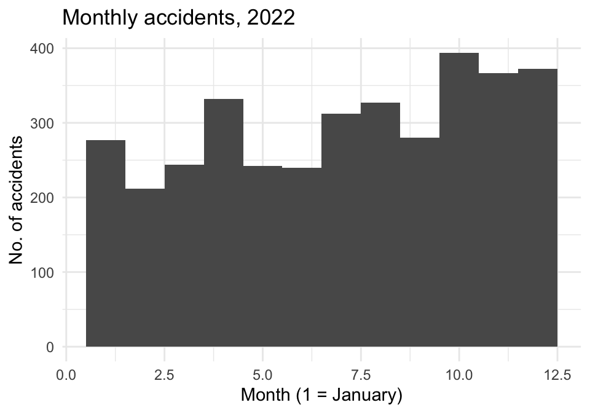
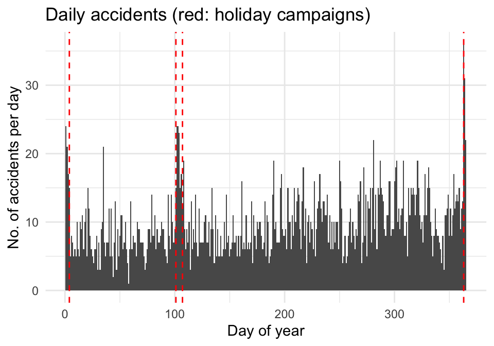
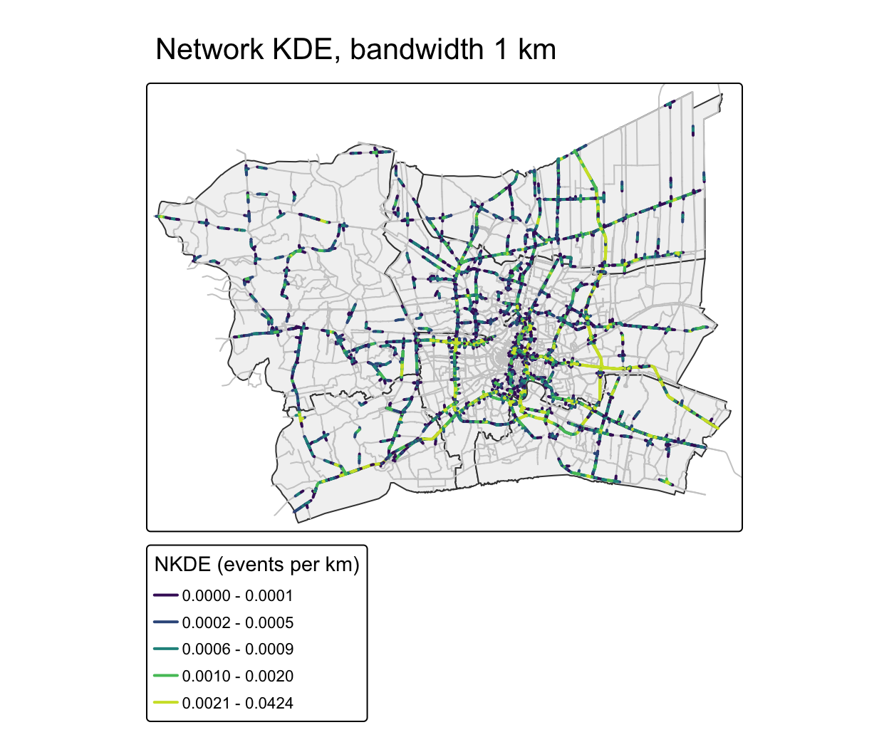
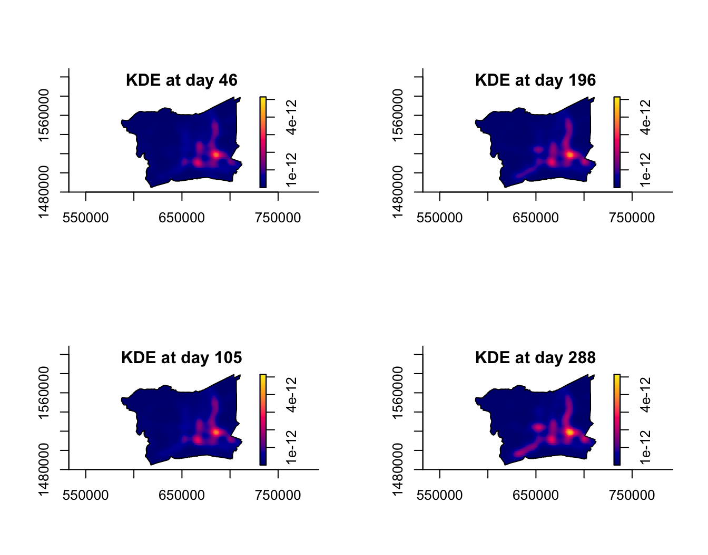
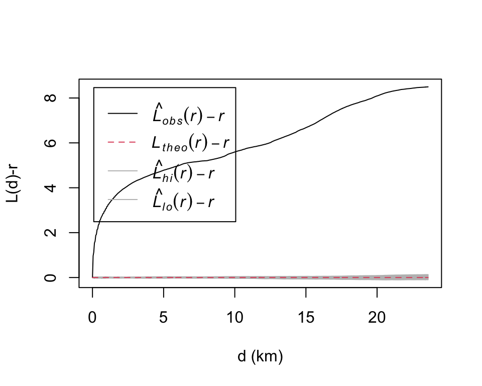
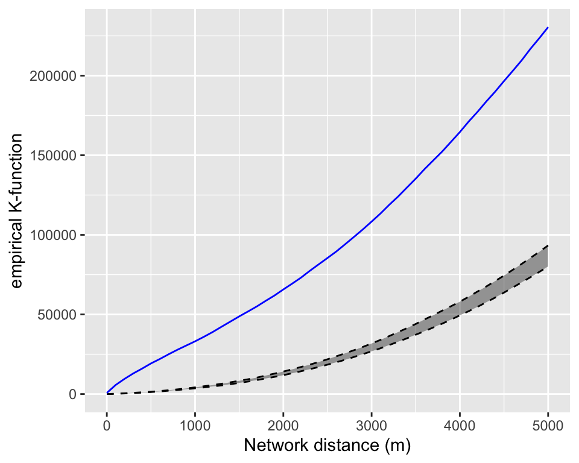

Executive Summary · Take-home Exercise 1 · ISSS626 Geospatial Analytics
2026-09-27
The problem
Research questions

Study area: Bangkok + 5 vicinity provinces (Nonthaburi, Pathum Thani, Samut Prakan, Samut Sakhon, Nakhon Pathom), from geoBoundaries ADM1
Data
| Dataset | Source |
|---|---|
| Road accidents 2019-2022 (2022 used) | Kaggle |
| Province boundaries | geoBoundaries |
| Major roads (motorway to tertiary) | OpenStreetMap via Geofabrik |
Point event: one recorded accident in 2022, inside BMR, within 100 m of a major road
From raw records to analysis-ready events
| Step | Records |
|---|---|
| Raw records, 2019-2022 | 81,735 |
| Occurred in 2022 | 21,032 |
| Valid coordinates (189 missing removed) | 20,843 |
| Inside BMR | 3,599 |
| Within 100 m of a major road | 3,594 |
No swapped coordinates or duplicate records were found. Some accidents share exact locations; they were kept.
Who recorded the accidents?
| Agency | Share |
|---|---|
| Department of Highways | 80.1% |
| Expressway Authority of Thailand | 13.1% |
| Department of Rural Roads | 6.8% |
| Bangkok Metropolitan Administration | 0% |
Important
All records come from national road agencies. Accidents on city-managed streets are likely missing, so results describe recorded accidents on highways, expressways and rural roads.
Accidents can only occur on roads, so the road network is the study space.
| Question | Main method | Reference / null model | Comparison |
|---|---|---|---|
| When? | Monthly and daily counts | – | Holiday campaign periods |
| Where? (first-order) | Network KDE (quartic kernel, 1 km along roads) | – | Planar KDE; NKDE at 0.5 and 2 km |
| Stable over time? | Spatio-temporal KDE by day of year | – | STKDE by month |
| Clustered? (second-order) | Network K- and G-functions, 50 simulations, Bangkok | CSR on the road network | Clark-Evans, G and L vs planar CSR |
Key assumptions: events are located on the major road network; network CSR treats every road as equally likely, ignoring traffic volume; recorded accidents represent all accidents (they do not, see slide 3).



Accidents concentrate on a few specific roads
Most of the major road network, including much of inner Bangkok, has zero or near-zero density.
Planar KDE shows the same corridors but spreads them into areas without roads; NKDE pinpoints the road segments.

Spatio-temporal KDE (bootstrap bandwidths: 3.1 km, 76 days)
The 76-day bandwidth shows seasonal change; short holiday peaks are smoothed out (see slide 5).
Planar L-function vs planar CSR (BMR)

Strong clustering at all distances, but planar CSR assumes accidents can occur anywhere, including fields and rivers.
Network K-function vs CSR on the network (Bangkok)

[Network K-function result]
Takeaway: much of the planar “clustering” reflects the fact that accidents are confined to a few roads. The network test is the fairer comparison.
Data
Methods
Supported directly by the analysis
Requires additional information
Note
These findings describe where recorded accidents concentrate; they do not show why they occur.
Road traffic accidents in BMR, 2022 · Executive Summary